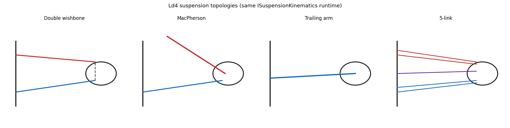

13. Multibody (Ld4-Ld5) — Overview¶
Learning objectives¶
이 chapter 를 마치면 다음을 할 수 있다.
- lumped 14-DOF (Ld3) 가 표현 못 하는 것 (wheel kinematics, compliance, topology 차이) 을 열거한다.
- hardpoint + joint + bushing abstraction 이 임의의 suspension topology 를 표현할 수 있는 이유를 설명한다.
- forward kinematics (FK) vs full DAE (Featherstone) 의 trade-off 를 판단한다.
- K&C (Kinematics & Compliance) chart 와 Adams Car cross-validation 의 의의를 설명한다.
Prerequisites¶
- Chapter 06 — lumped 14-DOF (Ld3), suspension 의 quasi-static 처리.
- Chapter 14 — 이 outlook 의 FK 가 실제로 구현된 상세.
- 외부 — multibody dynamics 기초 (Featherstone), 강체 운동학.
13.1 동기 — lumped 의 한계¶
Ld3 (chapter 06) 는 sprung corner displacement 를 small-angle linear 로, unsprung 를 single-DOF point mass 로 둔다. ride 의 quasi-static + transient 까지는 정확하나 다음을 표현 못 한다.
- wheel kinematics — bump steer, roll steer, camber-from-roll 등 suspension geometry 효과.
- anti-dive/anti-squat 의 정확한 model (scalar factor 근사만).
- bushing compliance — corner spring 효과만, bushing 6-DOF compliance 없음.
- suspension topology 차이 — MacPherson / DW / multi-link 의 구별.
- K&C chart — chassis 설계자의 표준 도구.
이것들이 본격 multibody (Ld4 kinematics, Ld5 compliance) 의 동기다.
13.2 가정 / 범위¶
| 항목 | 현재 (Ld4) | 미래 (Ld5) |
|---|---|---|
| Wheel kinematics | FK 구현 (chapter 14) | — |
| Joint | 강체 joint | bushing compliance |
| Dynamics | FK + quasi-static | full DAE (Featherstone) |
| K&C | sweep CSV + plot | 표준 chart 형식 |
| Validation | self-consistency | Adams cross-validation |
13.3 Multibody 데이터 모형¶
임의 suspension 을 표현하는 abstraction:
- RigidBody — mass, inertia, CG, pose (chassis, control arm, strut, knuckle, tie rod 등).
- Joint — Ball / Revolute / Cylindrical / Prismatic / Universal / Rigid. body 쌍 + 위치 + 축.
- Bushing — bushing-local 6-DOF linear stiffness/damping (translation 3 + rotation 3).
- Hardpoint — body-frame 좌표 (e.g. "lca_inner_front").
- SuspensionTopology — 위들의 묶음 + K&C 출력 (toe, camber, caster, kingpin, scrub, trail).
solver interface 는 FK (forward_kinematics), quasi-static compliance,
dynamics step 의 세 연산을 노출한다 (구현 §13.13 box).

13.4 Standard suspension topology¶
| Topology | 차종 / Use |
|---|---|
| MacPherson strut | sedan front |
| Double wishbone (SLA) | sports / race front |
| Multi-link 5-link | sedan rear |
| Trailing arm | compact rear |
| Beam axle (rigid) | truck / 4WD rear |
| Twist beam | FWD compact rear |
각 topology 가 hardpoint + joint + bushing 명세로 표현된다. 예로 MacPherson 은 chassis / LCA / strut / knuckle / tie_rod 의 5 body 와 revolute (LCA pivot) + ball (LCA-knuckle, strut top, tie rod) + prismatic/cylindrical (strut) 의 joint skeleton 으로 구성된다.
13.5 Forward Kinematics¶
문제: topology + wheel travel + steer 입력 → wheel center 의 world pose + toe, camber, caster.
해법은 각 topology 의 joint 제약을 만족하는 knuckle 자세를 푸는 것이다. MacPherson 예: strut top 은 chassis fixed, strut axis 는 prismatic, LCA outer ball 은 pivot 주변 원, tie rod outer 도 inner 주변 원 → knuckle 6-DOF 가 3 거리 제약 + 3 회전으로 결정. Newton-Raphson 또는 closed-form 으로 푼다 (상세 chapter 14).
K&C chart¶
travel ±100 mm, steer ±0.5 rad sweep 으로:
- toe(travel) — bump steer
- camber(travel) — camber gain
- caster(steer) — caster trail change
- track_change(travel) — scrub
- roll_center(travel) — roll center height
chassis 설계자의 표준 chart. Adams Car / VI 가 GUI 로 자동 plot 한다.
13.6 Quasi-static compliance¶
문제: topology + travel (FK 결과) + WheelLoad (Fx, Fy, Fz) → bushing deflection + updated wheel pose (compliance steer/camber).
linear bushing \(F = -K q - C\dot q\), quasi-static (\(\dot q=0\)):
bushing 각각의 deflection 합이 wheel pose 를 약간 회전/평행이동시킨다. 이것이 compliance steer (Fy 가 toe 를 바꾸는 정도) 의 모델링이며, Ld1-Ld3 는 무시한다. Ld5 의 핵심이다.
13.7 Full multibody dynamics¶
constraint 가 있는 multibody EoM 은 DAE 가 된다. Featherstone 의 알고리즘 (kinematic tree O(n), general O(n³)) 또는 augmented Lagrangian (penalty, 정확하나 stiff) 으로 푼다. K&C chart 가 chassis 설계 deliverable 의 대부분을 cover 하므로 full DAE 는 우선순위에서 뒤로 둔다.
13.8 Adams Car cross-validation¶
동일 차종의 hardpoint (Adams .adm template) 를 import 해 K&C 를 비교한다.
| 항목 | metric | target |
|---|---|---|
| Toe gain | mm/° at ±50 mm | ±5 % vs Adams |
| Camber gain | °/° | ±5 % |
| Roll center | height [mm] static | ±10 mm |
| Caster trail | mm | ±5 % |
| Scrub radius | mm | ±3 mm |
만족 시 chassis 설계자가 신뢰 가능. .adm parser 는 hardpoint coord + joint
topology + bushing linear 부분을 추출한다 (nonlinear curve 는 polynomial fit).
13.9 차별화 요약¶
단일 C++/Python ABI 안에서 Ld1-Ld3 (autonomy 도메인 simplified) 부터 Ld4-Ld5 (chassis 도메인 multibody) 까지 사다리 전체를 cover 하고, control 사다리 Lc1-Lc8 와 m × n 통합한다. Adams Car 는 Ld4-Ld5 영역만 다루고 control 은 Simulink 외부이므로, 이 통합이 차별화 지점이다.
13.10 한계¶
| 항목 | 현재 |
|---|---|
| FK solver | DW/MP/TA/5-link 구현 (chapter 14) |
| Hardpoint 값 | indicative (실측 fit 필요) |
| Bushing compliance | 강체 joint 만 (Ld5, Phase 2) |
| Full DAE | FK + quasi-static 만 |
| K&C 표준 chart | sweep CSV + plot; Adams 형식 미완 |
Ld4 kinematics 는 구현 완료, Ld5 compliance 가 Phase 2 의 다음 큰 항목이다.
13.11 다음 chapter 와의 연결¶
이 outlook 의 FK 가 실제로 어떻게 구현됐는지 — 4 topology 의 운동학 제약과 풀이, lookup/native 두 backend, Ld3 통합 — 는 chapter 14 (Hardpoint Kinematics) 에서 식 단위로 다룬다.
13.12 참고문헌¶
- Featherstone, R., Rigid Body Dynamics Algorithms, Springer, 2008.
- Genta, G., Motor Vehicle Dynamics, World Scientific, 2014, §8 multibody chassis.
- Reimpell, Stoll, Betzler, The Automotive Chassis, 2001, suspension geometry / K&C.
- Adams Car User Manual (MSC Hexagon) —
.admschema.
13.13 Self-check¶
1. lumped Ld3 가 bump steer 를 표현 못 하는 근본 이유?
unsprung 을 single vertical DOF point mass 로 두어 wheel 의 회전 운동학 (suspension geometry 가 만드는 toe/camber 변화) 자체가 모델에 없다. hardpoint 기반 FK 가 있어야 표현된다.2. hardpoint+joint+bushing 으로 임의 topology 를 표현할 수 있는 이유?
모든 suspension 은 강체(body) + 연결(joint) + 탄성(bushing) 의 조합이다. 이 세 primitive 와 좌표(hardpoint)만 주면 DW/MP/multilink 가 같은 데이터 모형의 인스턴스가 된다.3. FK + quasi-static 만으로도 chassis 설계에 충분한 경우는?
K&C chart (toe/camber/caster gain, roll center) 가 설계 deliverable 의 대부분. 이는 kinematic sweep + 선형 compliance 로 얻어지므로 full DAE 없이 cover 된다.4. compliance steer 란 무엇이며 어느 ladder 가 다루나?
Fy 등 외력이 bushing 을 변형시켜 toe 가 변하는 현상. 강체 joint 만 있는 Ld1-Ld4 는 무시하고, bushing 6-DOF compliance 를 갖는 Ld5 가 다룬다.5. Adams cross-validation 의 target 이 toe/camber gain 인 이유?
이들이 handling 거동을 좌우하는 핵심 K&C metric 이고 Adams 가 industry reference 이므로, gain 이 ±5 % 안에 들면 kinematic 모델의 신뢰성이 입증된다.13.14 VDSim 구현 노트¶
[VDSim impl] § 13.3 — multibody.hpp 데이터 모형
core/include/vdsim/multibody.hpp(M0 stub):RigidBody,enum JointType { Ball, Revolute, Cylindrical, Prismatic, Universal, Rigid },Joint,Bushing(6-DOF k/c),Hardpoint,SuspensionTopology,IMultibodySolver(forward_kinematics/quasi_static_compliance/step_dynamics).[VDSim impl] § 13.4 — topology config
configs/suspensions/*.yaml에 hardpoint + joint + bushing 명세. MacPherson (sedan FL) 예: bodies LCA(8.5)/strut(12.0)/knuckle(6.5)/tie_rod(1.8), hardpoints lca_inner_front/rear, lca_outer_ball, strut_top_mount, strut_to_knuckle, tie_rod_inner/outer, wheel_center.[VDSim impl] § 13.8 — Adams import
.adm/CSV → VDSim YAML parser:import_hardpoints.py(chapter 14.9). 본 프로젝트의python/tir_to_yaml.py패턴 재사용.[VDSim impl] § 13.10 — Roadmap M0-M7 상태
Stage 상태 deliverable M0 done header + topology YAML stub M1 done MacPherson FK + native solver (ch14.4) M2 done DW + trailing arm + 5-link FK (ch14.⅗/6) M3 Phase 2 quasi-static compliance (bushing) — 보류 M4 Phase 2 full DAE (Featherstone) M5 부분 sweep CSV + plot; 표준 K&C chart 미완 M6 done Adams CSV import (ch14.9) M7 Phase 2 Adams vs VDSim cross-validation (실측 대기) FK 가 lookup + native 두 backend 로 구현됨 (ch14.7). M3 compliance 가 Ld5 핵심으로 남음.